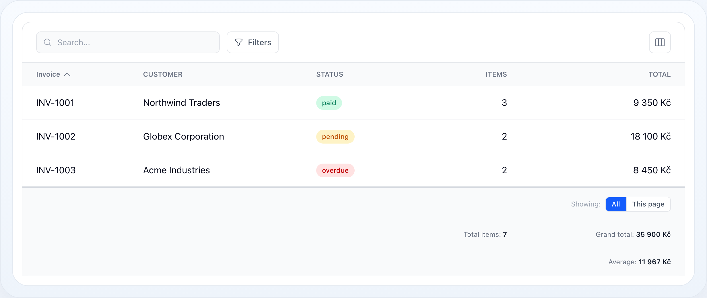

Tabulka
Souhrny
Souhrny agregují sloupec do hodnoty v patičce — součet, průměr, počet a další. Fungují na hlavní tabulce, na tabulkách podřádků a na rollup sloupcích, které tahají hodnoty z relace. Tato stránka pokrývá každou volbu.


Rozbalené položky faktury s řaditelnými hlavičkami, řádkovými akcemi a mezisoučtem za fakturu.
Na této stránce
- Rychlý start
- Typy agregací
- Zkratkové metody
- Rozsahy
- Přepínač rozsahu
- Formátování čísel
- Vlastní formátovač
- Podmíněná agregace
- Rollup sloupce
- Celkové součty přes všechny děti
- Celkové součty ze sloupců podřádků
- Vlastní closure souhrny
- Více souhrnů
- Jak se počítá
- Rozpracovaný příklad
- Související dokumentace
Souhrny agregují sloupec do hodnoty v patičce — součet, průměr, počet a další. Fungují na hlavní tabulce, na tabulkách podřádků a na rollup sloupcích, které tahají hodnoty z relace. Tato stránka pokrývá každou volbu.
Rychlý start
Zavolejte ->summarize() (nebo zkratku jako ->summarizeSum()) na libovolném
sloupci. Řádek patičky se objeví automaticky s výsledkem:
use NyonCode\WireTable\Columns\TextColumn;use NyonCode\WireTable\Table; public function table(Table $table): Table{ return $table ->model(Invoice::class) ->columns([ TextColumn::make('number')->label('Invoice'), TextColumn::make('total') ->money() ->summarizeSum(), // patička: Σ každé filtrované faktury ]);}┌────────────┬──────────────┐│ Invoice │ Total │├────────────┼──────────────┤│ INV-1001 │ 9 350 Kč ││ INV-1002 │ 18 100 Kč ││ INV-1003 │ 8 450 Kč │├────────────┼──────────────┤│ Sum: │ 35 900 Kč │└────────────┴──────────────┘Typy agregací
První argument summarize() je typ agregace — case enumu SummaryType nebo
jeho řetězcová hodnota. Vestavěné typy:
| Case enumu | Řetězec | Výsledek | Příklad výstupu |
|---|---|---|---|
SummaryType::Sum |
sum |
Součet všech hodnot | 35 900 |
SummaryType::Avg |
avg |
Průměr (zaokrouhlený na 2 desetinná) | 11 966.67 |
SummaryType::Count |
count |
Počet non-null hodnot | 30 |
SummaryType::DistinctCount |
distinctCount |
Počet distinct hodnot | 7 |
SummaryType::Min |
min |
Nejmenší hodnota | 10 |
SummaryType::Max |
max |
Největší hodnota | 90 |
SummaryType::Range |
range |
Řetězec "min – max" |
10 – 90 |
SummaryType::Median |
median |
Prostřední hodnota (průměr dvou u sudého) | 40.0 |
SummaryType::Variance |
variance |
Výběrový rozptyl (n − 1) | 4.57 |
SummaryType::Stddev |
stddev |
Výběrová směrodatná odchylka | 2.14 |
SummaryType::First |
first |
První hodnota v sadě | Alice |
SummaryType::Last |
last |
Poslední hodnota v sadě | Zoe |
| — | Closure |
Vlastní — fn ($values, $query) => … |
cokoli |
use NyonCode\WireTable\Columns\SummaryType; TextColumn::make('score') ->summarize(SummaryType::Median) ->summarize('stddev'); // řetězce se normalizují na enumŘetězce se validují na místě — neznámý typ vyhodí
InvalidArgumentException vypisující platné hodnoty, místo tichého vykreslení
prázdné buňky patičky.
Zkratkové metody
Každý běžný typ má fluent zkratku, která také nastaví rozumný výchozí popisek:
| Zkratka | Ekvivalent |
|---|---|
->summarizeSum() |
->summarize('sum') |
->summarizeAvg() |
->summarize('avg') |
->summarizeCount() |
->summarize('count') |
->summarizeDistinct() |
->summarize('distinctCount') |
->summarizeMin() |
->summarize('min') |
->summarizeMax() |
->summarize('max') |
->summarizeRange() |
->summarize('range') |
->summarizeMedian() |
->summarize('median') |
->summarizeStddev() |
->summarize('stddev') |
Každá zkratka přijímá volitelný popisek a rozsah:
->summarizeSum('Grand total', scope: 'query')Rozsahy
scope: rozhoduje, které záznamy se agregují.
| Rozsah | Agreguje přes | Jak počítáno |
|---|---|---|
query |
všechny záznamy odpovídající aktuálním filtrům | SQL SUM()/AVG()/… (efektivní) |
page |
jen aktuální stránku | v paměti z načtené stránky |
selection |
jen zaškrtnuté řádky | v paměti z vybraných modelů |
subRows |
děti jednoho rodičovského řádku | v paměti z relace |
TextColumn::make('price')->summarize('sum', scope: 'page');query je výchozí. Spouští skutečný databázový agregát, takže zůstává rychlý i
přes miliony řádků — nikdy je nenačítá do paměti.
Na sloupci podřádku se rozsahy dělí stejně: subRows vykreslí mezisoučet
per rodič uvnitř rozbaleného panelu, zatímco query (výchozí) vykreslí
celkový součet všech dětí napříč všemi rodiči v hlavní patičce — viz
Celkové součty ze sloupců podřádků.
Přepínač rozsahu
Když je dostupný více než jeden rozsah, patička vykreslí kompaktní přepínač, takže uživatel může přepnout, co součty odrážejí, aniž byste cokoli překonfigurovávali:
Showing: [ All ] This page┌────────────┬──────────────┐│ Invoice │ Total ││ … │ … │├────────────┼──────────────┤│ Grand total: 35 900 Kč │└────────────┴──────────────┘All mapuje na query, This page na page a Selection se objeví jen když
jsou řádky zaškrtnuté. Aktivní volba je uložena ve stavu Livewire tabulky.
Formátování čísel
Numerické souhrny se formátují s prefixem/suffixem sloupce a, když je nastaveno,
->summaryDecimals():
TextColumn::make('total') ->suffix(' Kč') ->summaryDecimals(2) // desetinná, čárka jako oddělovač, mezera tisíce ->summarizeSum(); // 1234.5 → "1 234,50 Kč"summaryDecimals() bere volitelné oddělovače:
->summaryDecimals(2, decimalSeparator: '.', thousandsSeparator: ',') // 1,234.50| Konfigurace | Surové | Vykresleno |
|---|---|---|
| (žádná) | 1234.5 |
1234.5 |
->summaryDecimals(2) |
1234.5 |
1 234,50 |
->summaryDecimals(2, '.', ',') |
1234.5 |
1,234.50 |
->prefix('$')->summaryDecimals(2,'.',',') |
1500 |
$1,500.00 |
->suffix(' Kč')->summaryDecimals(2) |
1234.5 |
1 234,50 Kč |
count a distinctCount se nikdy nepřeformátují jako desetinná čísla — zůstanou
celočíselné. range je už formátovaný řetězec "min – max".
Vlastní formátovač
Pro plnou kontrolu předejte closuru format. Dostane vypočtenou hodnotu a
vyhrává nad výchozím formátováním:
->summarize('sum', format: fn ($value) => '€'.number_format($value, 2));Podmíněná agregace
Omezte, které záznamy se agregují, pomocí when:. Predikát se liší podle rozsahu:
// DB rozsah (query): dostane query builder->summarize('sum', when: fn ($query) => $query->where('paid', true)) // V paměti (page / selection / subRows): dostane (value, record)->summarize('sum', scope: 'page', when: fn ($value, $row) => $row->paid)Zahrnou se jen řádky, kde when() vrací true — například součet jen zaplacených
faktur při stálém výpisu každé faktury.
Rollup sloupce
Sloupec může tahat agregát z relace a ukázat ho per řádek. Ty se počítají
jako efektivní withCount / withSum podotázky:
| Metoda | Buňka ukazuje |
|---|---|
->counts('items') |
počet dětí |
->sums('items', 'price') |
SUM(price) dětí |
->averages('reviews', 'rating') |
AVG(rating) dětí |
->mins('items', 'price') |
MIN(price) dětí |
->maxes('items', 'price') |
MAX(price) dětí |
TextColumn::make('items_total') ->sums('items', 'line_total') // per řádek: součet položek této faktury ->money();Celkové součty přes všechny děti
Přidejte souhrn na rollup sloupec a patička ukáže celkový součet každého dítěte napříč všemi rodiči — součet rollupů per řádek:
TextColumn::make('items_total') ->sums('items', 'line_total') // rollup per řádek v buňce ->summaryDecimals(0) ->suffix(' Kč') ->summarizeSum('Grand total'); // patička: každá položka, každá faktura┌────────────┬──────────────┐│ Invoice │ Items total │├────────────┼──────────────┤│ INV-1001 │ 9 350 Kč │ ← SUM položek INV-1001 (rollup)│ INV-1002 │ 18 100 Kč ││ INV-1003 │ 8 450 Kč │├────────────┼──────────────┤│ Grand total: 35 900 Kč │ ← SUM přes položky každé faktury└────────────┴──────────────┘Celkový součet se agreguje v SQL nad filtrovaným dotazem (rollup alias je zabalen jako odvozená tabulka) — rodičovské řádky se nikdy nenačítají do paměti a desetinné sloupce se sčítají s databázovou přesností.
Celkové součty ze sloupců podřádků
Když tabulka používá podřádky, částka často žije jen na dětských
řádcích — neexistuje rodičovský sloupec k rollupu. Dejte sloupci podřádku
souhrn v rozsahu query (výchozí rozsah) a celkový součet všech dětí se vykreslí
v hlavní patičce, bez rollup sloupce:
->subRows('items')->subRowColumns([ TextColumn::make('product'), TextColumn::make('line_total') ->suffix(' Kč') ->summaryDecimals(0) ->summarizeSum('Subtotal', scope: 'subRows') // patička panelu per rodič ->summarizeSum('Celkem'), // celkový součet v hlavní patičce])┌───┬────────────┬─────────────┐│ ▸ │ INV-1001 │ … ││ ▸ │ INV-1002 │ … │├───┴────────────┴─────────────┤│ Celkem: 35 900 Kč │ ← všechny položky všech filtrovaných faktur└──────────────────────────────┘Součet se počítá v SQL nad dětskou tabulkou, omezený na aktuální množinu rodičů,
a respektuje vše, co respektují zobrazené děti:
Filter::subRows() zúžené filtry,
subRowQuery() a interaktivní lišta filtrů podřádků. Přepínač rozsahu patičky
platí také — All sečte děti všech filtrovaných rodičů, This page jen děti
rodičů na aktuální stránce, Selection jen děti zaškrtnutých rodičů.
Protože sloupce podřádků nezarovnávají s rodičovským gridem, tyto součty se
vykreslují jako řádky patičky přes celou šířku. Podporují se jen přímé relace
rodič→dítě (HasMany, HasOne a jejich morph varianty).
Vlastní closure souhrny
Pro cokoli, co vestavěné nepokrývají, předejte closuru. Dostane kolekci non-null
hodnot sloupce a (pro rozsah query) query builder:
use Illuminate\Support\Collection; TextColumn::make('price')->summarize( fn (Collection $values, $query) => $values->max() - $values->min(), label: 'Spread',);Více souhrnů
Naskládejte na jeden sloupec tolik souhrnů, kolik potřebujete — každý se vykreslí na svém vlastním řádku patičky:
TextColumn::make('total') ->money() ->summaryDecimals(2) ->summarizeSum('Grand total') ->summarizeAvg('Average') ->summarizeMax('Largest');Jak se počítá
- Rozsah
querypoužívá skutečný SQL agregát (SUM,AVG,COUNT,MIN,MAX,DISTINCT COUNT). Klonuje filtrovaný dotaz, takže dotaz tabulky zůstane nedotčený, a nikdy nenačítá řádky do paměti. - Rollup sloupce v rozsahu
queryzabalí filtrovaný dotaz jako odvozenou tabulku a agregují rollup alias v SQL — stejná záruka, žádné načítání řádků, součty s databázovou přesností. - Celkové součty podřádků spouští jeden SQL agregát na sumarizovaný sloupec podřádku nad dětskou tabulkou, omezený na aktuální množinu rodičů.
- Statistické typy, které nejsou přenositelné napříč drivery (
median,variance,stddev,first,last), tahají jediný sloupec a počítají v PHP. page/selection/subRowspočítají v paměti z už načtených modelů — žádný extra dotaz.- Prázdné sady vrací
0prosum/count/distinctCount,–prorangea jinaknull.
Rozpracovaný příklad
public function table(Table $table): Table{ return $table ->model(Invoice::class) ->columns([ TextColumn::make('number')->label('Invoice')->sortable(), TextColumn::make('customer')->label('Customer'), BadgeColumn::make('status')->colors([ 'paid' => 'success', 'pending' => 'warning', 'overdue' => 'danger', ]), TextColumn::make('items_count') ->label('Items') ->counts('items') ->summarizeSum('Total items'), TextColumn::make('items_total') ->label('Total') ->sums('items', 'line_total') ->numeric(0) ->suffix(' Kč') ->summaryDecimals(0) ->summarizeSum('Grand total') ->summarizeAvg('Average'), ]) ->searchable() ->paginated(false);}Související dokumentace
- Podřádky — mezisoučty per rodič a souhrny dětí
- Seskupení řádků — řádky mezisoučtů per skupina
- Exporty — souhrny se připojují k CSV/Excel/PDF exportům
- Sloupce
- Přehled tabulek